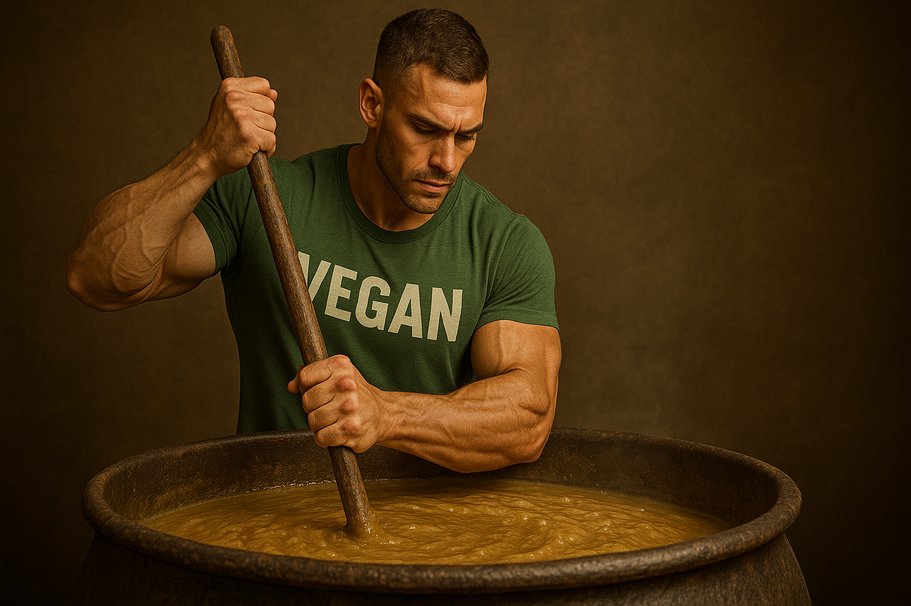

How to Mix Vegan Protein Powder Without Clumps
No one likes a protein shake that drinks like gravel. Clumps form because raw plant proteins are naturally less soluble than whey, but the fix is part science, part bartender technique. High-intensity ultrasound treatments boosted pea-protein solubility eightfold in lab trials, proving texture issues are mechanical, not destiny. *
Start with the liquid. Warm—not boiling—water or milk around forty-five degrees Celsius dissolves hydrophobic peptides faster; dairy studies show solubility climbs sharply between forty and fifty before heat aggregation kicks in, and plant proteins follow the same curve. *
Pour the liquid first, then add powder slowly while you swirl. Shaker bottles with a wire whisk break up agglomerates better than plain cups, and consumer gear tests rank mixing mechanisms as the single biggest factor in a smooth sip. *
If you still meet floating islands, go electric. Portable vortex blenders shear particles the same way ultrasound does on a smaller scale; editors at Men’s Health found they produced completely uniform pea-protein shakes in under ten seconds. *
Another hack is the slurry method. Stir one scoop of powder with just two ounces of liquid to form a paste, then top up to full volume. Hydrating the proteins first lets water penetrate before density locks in, so the final shake drinks creamy instead of chunky.
Time also helps. Mix your shake, let it sit three minutes, then shake again. Hydration kinetics studies show most plant particles absorb enough water in that window to break weak agglomerates without extra gadgets. *
Pick powders engineered for easy mixing:
- Vega Sport Premium Protein: Instantized pea-rice blend with sunflower-lecithin for easy mixing; one quick shake and they vanish into water.
- Orgain Organic Plant-Based Protein Powder: Adds gum acacia for milkshake body, so clumps melt even with a spoon.
- KOS Organic Plant Protein: Coconut milk powder and monk fruit mask any stray grit, bakery-flavored.
- Sunwarrior Warrior Blend: Hemp-pea base dissolves thin and clear, perfect before cardio.
- liquid first then powder
- warm temperature not boiling
- wire-whisk or vortex blender
- slurry then dilute
- three-minute rest and reshake
- instantized powder with lecithin
Follow those moves and even stubborn plant proteins whip into silky shakes worthy of a coffee-bar frother—no gritty surprises at the bottom of the cup.